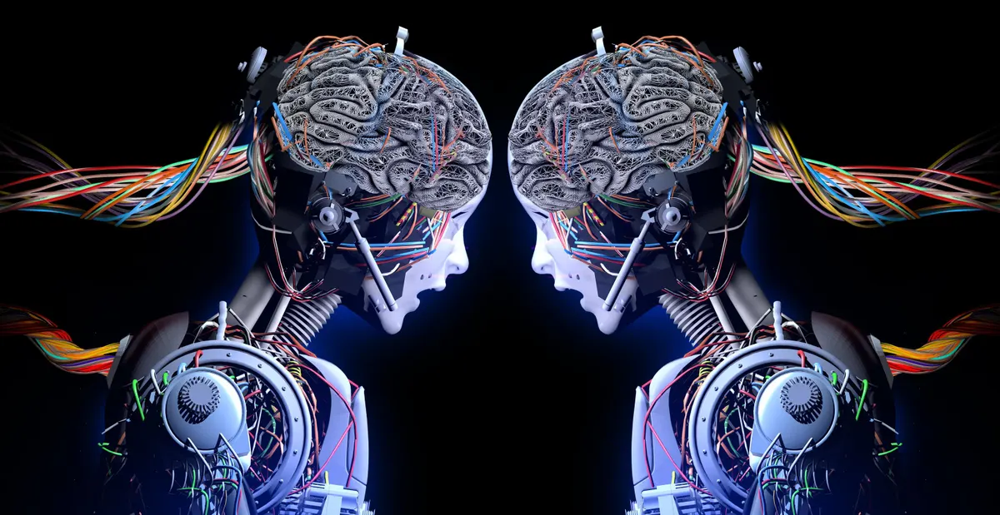

The Artificial Intelligence in Engineering
Artificial intelligence (AI) is transforming the field of engineering by offering new capabilities and solutions to complex problems. Here are descriptions of how AI is applied in various aspects of engineering:
AI in engineering refers to the application of artificial intelligence techniques, such as machine learning, computer vision, natural language processing, and expert systems, to solve engineering problems and enhance engineering processes. It involves the use of intelligent algorithms and systems that can mimic human intelligence, learn from data, make decisions, and perform tasks traditionally carried out by engineers.
AI algorithms can generate and optimize designs based on specified requirements and constraints. They can analyze large datasets, identify patterns, and propose innovative design solutions.
The application of AI in engineering enables engineers to tackle complex problems more effectively, optimize processes, improve safety, and drive innovation. As AI technologies continue to advance, their impact on the engineering field is expected to grow, leading to more efficient and intelligent engineering solutions.
Latest Technology in Engineering About Artificial Intelligence

Deep Learning
Deep learning, a subset of machine learning, has gained significant attention in recent years. It involves the use of neural networks with multiple layers to process and learn from complex data. Deep learning has been applied to various engineering tasks, such as image and speech recognition, natural language processing, and predictive modeling.
Deep learning algorithms are designed to learn and extract hierarchical representations of data by using multiple layers of artificial neurons called artificial neural networks. These neural networks are organized in layers, with each layer processing and transforming the data received from the previous layer. The deep structure of these networks allows them to learn and understand complex patterns and relationships in the data.
Advantages of a Deep Learning in AI:
One of the key advantages of deep learning is its ability to automatically learn relevant features from raw data, eliminating the need for manual feature engineering. This is particularly useful when working with high-dimensional data such as images, audio, and text. Deep learning algorithms have achieved remarkable success in various domains, including computer vision, natural language processing, speech recognition, and many other areas.

Performance Optimization
Remote Monitoring and Control
Training and Simulation
Digital Twins
Digital twins are virtual representations of physical systems or processes. AI-powered digital twins utilize real-time data from sensors, IoT devices, and simulation models to create accurate virtual models. Engineers can use these models for predictive maintenance, optimization, and performance analysis of complex engineering systems.
Advantages of a Digital Twin:
Digital twinning AI allows engineers to create a virtual replica of a product or system early in the design phase. This enables them to explore and test different design alternatives, analyze performance, and identify potential issues or areas for improvement before physical prototypes are built. It accelerates the design process and reduces costs associated with physical testing and iterations.
It's important to note that AI is a rapidly evolving field, and new technologies and advancements continue to emerge. To stay up to date with the latest developments, it's advisable to refer to recent research papers, attend conferences, and follow industry news and advancements in AI and engineering.
Explore more articles about Artificial Intelligence(AI) in Engineering
Software Engineering Institute
AI engineering is an emergent discipline focused on developing tools to enable the application of artificial intelligence in real-world contexts.
Learn MoreWhich engineering course is best for Artificial Intelligence?
AI engineers possess. In addition, they employ various tools and strategies to handle data and build and manage AI systems.
Learn MoreAI for business: Change what's possible
We live in two parallel realities, one of atoms and one of bits. Explore the potential negative psychological effects of technology on people in the digital age.
Learn More